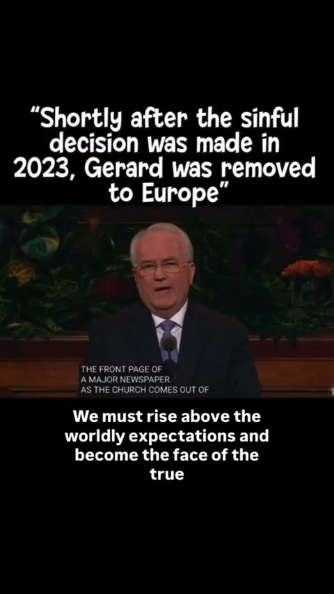
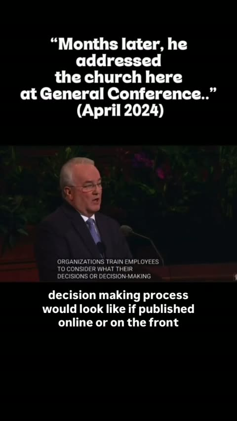

The Good Guy Edit
On September 22, Tim Ballard posted a 4½-minute video speaking directly to Matt Holland, son of Elder Jeffrey R. Holland. In the middle he splices in a 2024 General Conference talk by Elder Jack N. Gerard and labels Gerard the "GOOD GUY." Here is how it's put together.
How the video is built
| Time | What's on screen | What he says |
|---|---|---|
| 0:00 | Ballard, driving | Backfire "clearly shows the obscene lie by the LDS Church." Invites "a friend of mine, Matt Holland." |
| 0:24 | Ballard; a still of Gerard captioned GOOD GUY (0:40) | "You were in those meetings… I don't know if you sided with Jack Gerard or not." |
| 1:33 | Ballard, then Gerard's portrait: "Jack Gerard: former Director Church Communications (2023)" | "If you agreed to the decision in those meetings that you were in in the fall of 2023, repent… If you didn't agree, like Jack Gerard, I don't think agreed, then say that." |
| 1:47 | Gerard at the Conference Center pulpit, with Ballard's overlays | Gerard's own words (below). Ballard doesn't speak. |
| 2:58 | Ballard, driving | Straight out of Gerard's last line: "Come out, live your covenant, Matt. What would your father say?" Then "You're going to meet your maker, Matt Holland." |
| 4:17 | "Please watch Backfire: The Excommunication Story of Tim Ballard" | "Angels above us are silent notes taking right now." |


What Gerard says in the clip
"As a covenant people and as leaders of his church, we must be beyond reproach and align with the standards the Lord has set… We go out of our way to avoid any perception that our actions may be influenced by the honors of men. Some organizations train employees to consider what their decisions… would look like if published online or on the front page of a major newspaper."Elder Jack N. Gerard, General Conference, as excerpted by Ballard (1:47–2:58)
Nothing in the excerpt mentions Ballard, Operation Underground Railroad, any meeting, or any 2023 decision. It's about integrity in general. The link to Ballard comes from the overlays he added and from where he placed the clip. It runs right after "If you didn't agree, like Jack Gerard," and the moment Gerard finishes with "the front page of a major newspaper," Ballard cuts back to himself: "Come out, live your covenant, Matt. What would your father say?" (2:58). Gerard's general words about integrity are made to read as a message aimed at Matt Holland.
His claims, sorted
- His claimMatt Holland "was in those meetings" in fall 2023 where a "decision to lie" was made. No document, date or other attendee is shown.
- His claimGerard disagreed with that decision. His own wording is uncertain: first "I don't know if you sided with Jack Gerrard or not," then "like Jack Gerard, I don't think agreed."
- His claim"Shortly after the sinful decision was made in 2023, Gerard was removed to Europe." The overlay is in quotation marks but names no source.
- On screenThe General Conference footage is real footage of Elder Gerard. Ballard's overlay dates it April 2024. We haven't yet matched the excerpt against the Church's conference archive.
- On screenBallard calls Holland "a friend of mine" and "a good person," then says "is your cushy life just too good for you?" and "it's going to be a bad meeting" with Jesus.
What this page does not claim
It doesn't say what was discussed in any Church meeting, who attended, or why Elder Gerard was given any assignment. It reports only what Ballard's video says and shows.